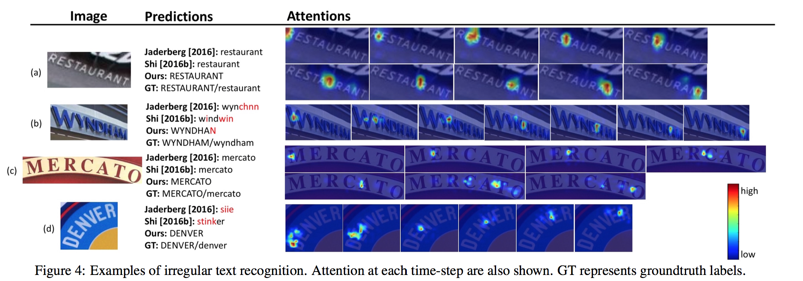
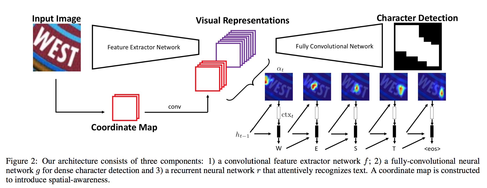

Learning to Read Irregular Text with Attention Mechanisms |
||||||||||||||||||||||||||||||||||||||||||||||||||||||||||||||||||||||||||||||||||||||||||||||||||
|
 |
Abstract
We present a robust end-to-end neural-based model to attentively recognize text in natural images. Particularly, we focus on accurately identifying irregular (perspectively distorted or curved) text, which has not been well addressed in the previous literature. Previous research on text reading often works with regular (horizontal and frontal) text and does not adequately generalize to processing text with perspective distortion or curving effects. Our work proposes to overcome this difficulty by introducing two learning components: (1) an auxiliary dense character detection task that helps to learn text specific visual patterns, (2) an alignment loss that provides guidance to the training of an attention model. We show with experiments that these two components are crucial for achieving fast convergence and high classification accuracy for irregular text recognition. Our model outperforms previous work on two irregular-text datasets: SVT-Perspective and CUTE80, and is also highly-competitive on several regular-text datasets containing primarily horizontal and frontal text. | |
Network Architecture
 | |
Paper
Learning to Read Irregular Text with Attention Mechanisms (link) | |
Supplementary Material | |
Acknowledgement We gratefully acknowledge partial support from NSF grant CCF 1317560 and a hardware grant from NVIDIA. |